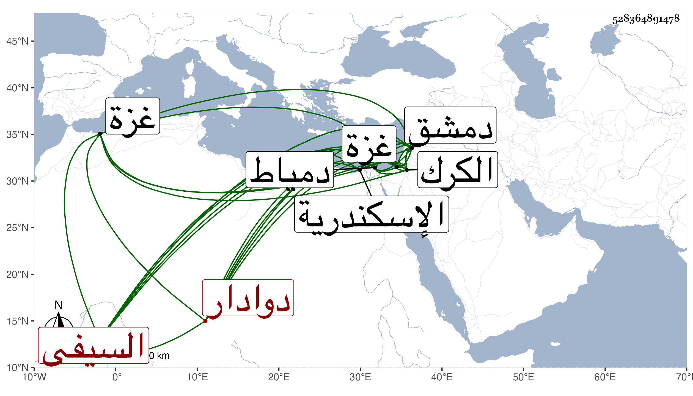

0902Sakhawi.DawLamic.ITO20230111-ara1.EIS1600.528364891478
Biography ID: 528364891478
43
طوغان السيفي دوادار السلطان بدمشق . اختلف في سيده فقيل نوروز الحافظي أو اقبردي المنقار ، كان من أجناد الدولة الأشرفية ثم عمله الظاهر جقمق خاصكيا ثم نائب دمياط ثم أتابك غزة ثم أمير طبلخاناه بدمشق ثم دواداره بها وسافر منها أمير الترك ثم استقر به في نيابة الكرك ، ولم يلبث أن قتل بها في سنة ست وخمسين ، وكان مشكور السيرة مع سوء خلقه وبادرته وطيشه وإنما قدمه الظاهر لكونه لما ندبه لقتل قرقماس الشعباني باسكندرية لم يستعف كغيره . قلت وأظن أنه والد علي دوادار قانصوه خمسمائة أميرآخور وقد قال لي أنه كان مؤيديا .
